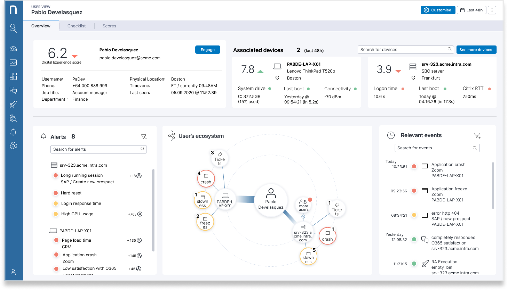
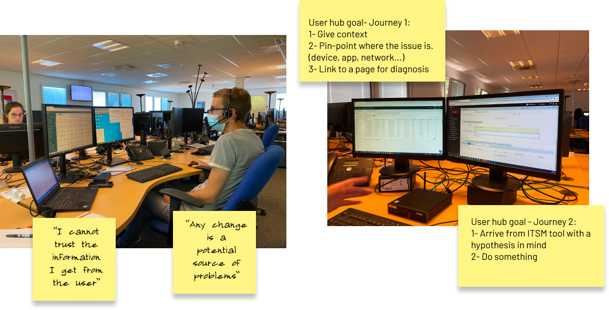
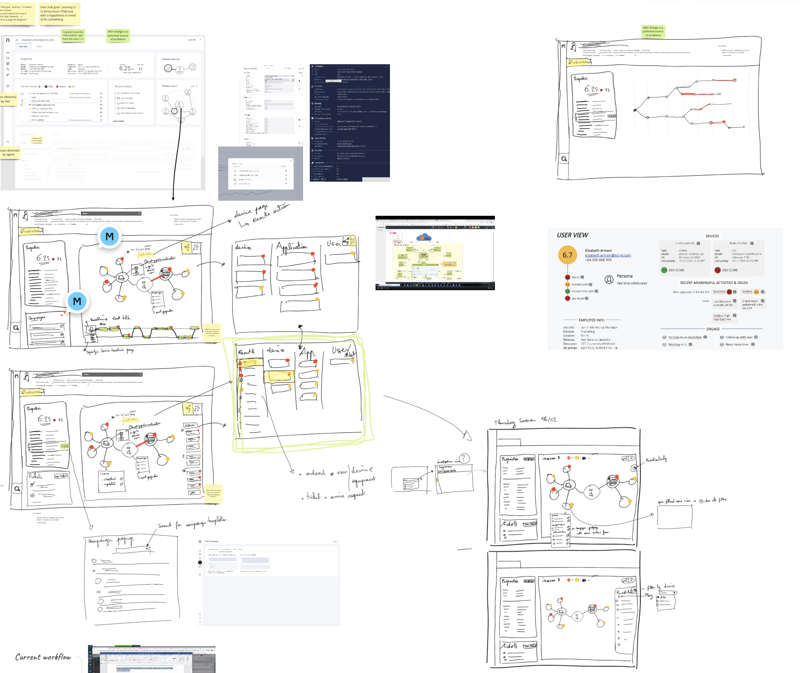
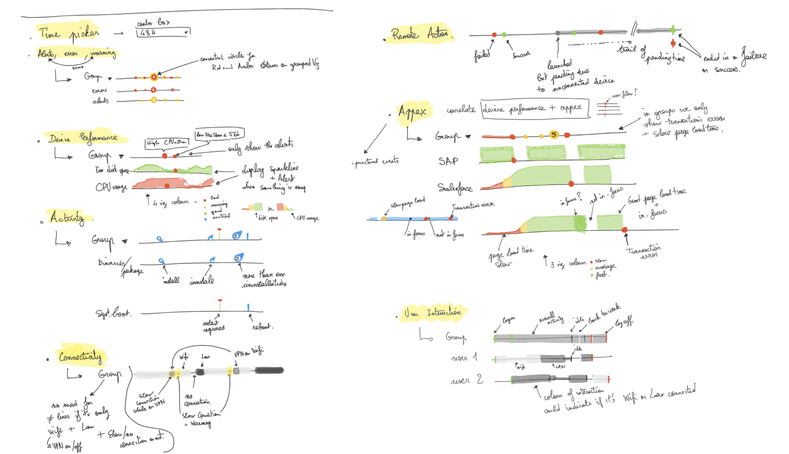
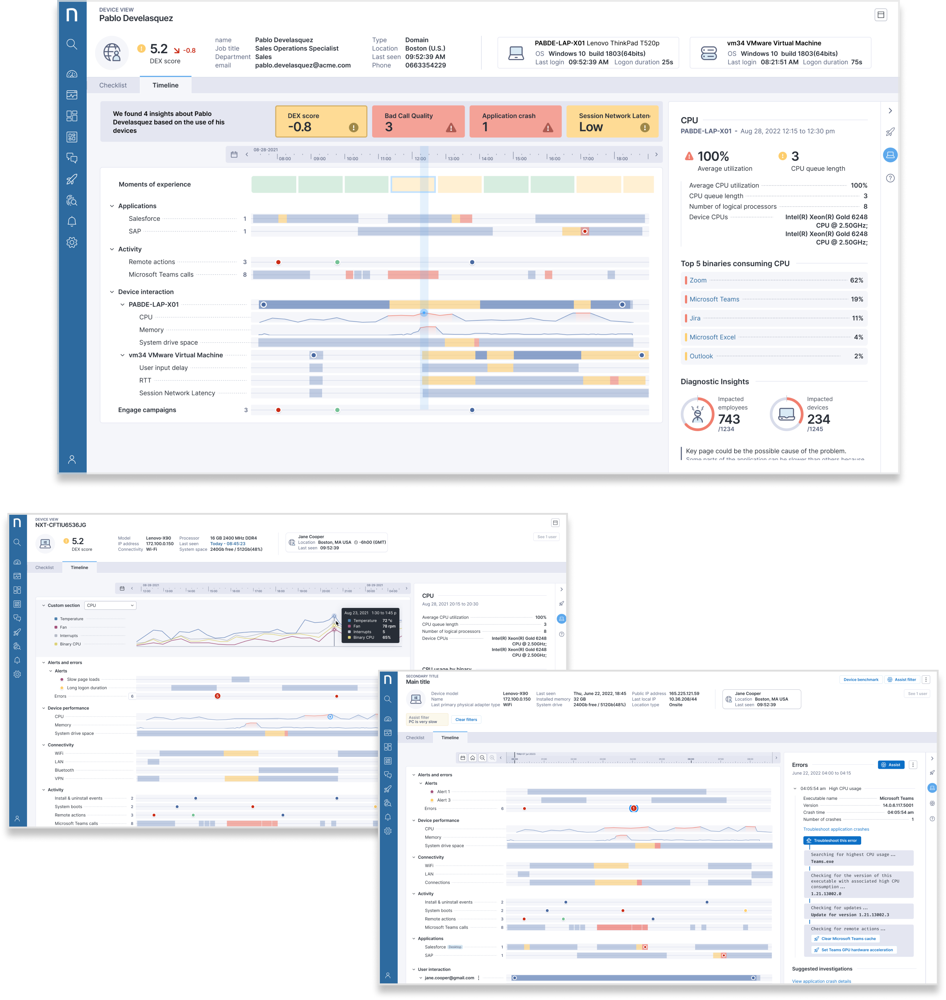

IT Support · Nexthink Infinity
Support View
Support View
Feature
A unified user and device intelligence hub that lets L2/L3 agents diagnose issues in minutes, not hours.
A unified user and device intelligence hub that lets L2/L3 agents diagnose issues in minutes, not hours.
L2 and L3 agents had to navigate multiple disconnected views to diagnose a single device issue — user history, device health, event timelines, and remediation options all lived in separate places. What should take minutes was taking hours, and institutional knowledge was the only thing bridging the gaps.
I started with ethnographic research — shadowing senior agents during live incident investigation to map exactly where time was lost. A data-sketching workshop with cross-functional stakeholders defined what information belonged in a unified view and in what order. Multiple rounds of wireframes followed before the interaction model was locked.
A unified investigation hub inside Nexthink Infinity — collapsing user profile, device health, and event timeline data into a single chronological view. Agents can now move from ticket open to root cause in a fraction of the time, with AI-assisted insights surfaced directly in context.
The existing Nexthink views gave agents access to data — but not context. User information, device health, and event history were spread across separate screens, forcing agents to mentally stitch together a picture of what had happened and when. The cognitive load was high and the margin for error was real.

The process was grounded in fieldwork — user interviews, live session shadowing, and a structured data-sketching workshop to establish the right information hierarchy. Miro became the shared canvas for mapping event data and defining the timeline interaction model before moving into Figma.




The final Support View collapsed user, device, and event data into a single, scrollable intelligence hub. The timeline interaction lets agents scrub through a device's event history while keeping user context and AI-generated insights permanently in view — turning a multi-screen investigation into a single focused workflow.


